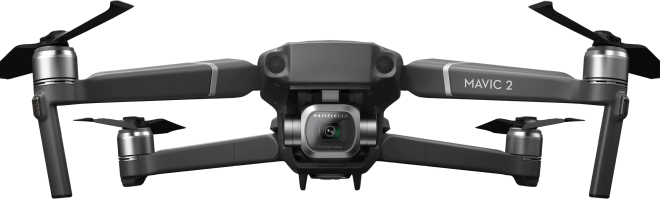

Mavic 2 Pro
Квадрокоптер Dji Mavic 2 Pro
с профессиональной камерой Hasselblad


Что такое Mavic 2 Pro?
Дрон Mavic 2 Pro - это инженерное чудо, идеальное для аэросъемки. Дрон
обладает
всеми
лучшими технологиями DJI, он преобразит мир аэросъемки.
Mavic 2 Pro оснащен совершенно новой камерой Hasselblad L1D-20c. Камера L1D-20c работает по
уникальной
технологии Hasselblad Natural Colour Solution (HNCS)5, позволяющей пользователям делать
великолепные
снимки с воздуха с разрешением в 20 мегапикселей и потрясающими цветами.
Лучшая беспилотная
технология аэросъемки

Преимущества
Интеллектуальные
режимы
Mavic 2 унаследовал 6 стандартных
режимов интеллектуальной
съемки
QuickShot:Roket/Dronie/Circle/Helix/
Boomerang/Asteroid.

Active Track 2.0
Усовершенствованный режим второго
поколения распознаёт и
отслеживает
объекты ещё точнее, быстрее и умнее.
Панорамная съемка
Mavic 2 поддерживает 4 режима
панорамной съёмки: сферическая,
180 градусов,
горизонтальная, вертикальная

Крутая камера!
Технология Hyperlapse в четырёх режимах
исполнения.
Улучшенный фото режим HDR
Функция HyperLight для съёмки в
условиях слабого освещения
4К съёмка
Характеристики
Dlog-M 10 бит
Mavic 2 Pro поддерживает цветовой профиль Dlog-M 10 бит с более широким динамическим диапазоном, дающим больше возможностей для цветокоррекции.
Матрица CMOS 1
Зона активной работы новой 1-дюймовой матрицы CMOS в четыре раза превышает показатели Mavic Pro
Камера Hasselblad
Камера Hasselblad L1D-20С известны эргономичным дизайном и превосходным качеством изображений.
Видео HDR
Благодаря поддержке видео 4K HDR 10 бит, Mavic 2 Pro можно подсоединить к совместимому с HLG 4K ТВ и просматривать запись в полном цветовом спектре
Остались вопросы?
Какие отличия между Mavic 2 Pro и Mavic 2 Zoom?
В Mavic 2 улучшены практически все аспекты: камера, передача видеосигнала, полётное время, скорость, уровень шума, обнаружение препятствий в нескольких направлениях, интеллектуальные функции и уникальная функция Hyperlapse (гиперлапс).
Чем Mavic 2 лучше Mavic Pro?
В Mavic 2 улучшены практически все аспекты: камера, передача видеосигнала, полётное время, скорость, уровень шума, обнаружение препятствий в нескольких направлениях, интеллектуальные функции и уникальная функция Hyperlapse (гиперлапс).
Можно ли подключить Mavic 2 к очкам DJI Goggles?
В Mavic 2 улучшены практически все аспекты: камера, передача видеосигнала, полётное время, скорость, уровень шума, обнаружение препятствий в нескольких направлениях, интеллектуальные функции и уникальная функция Hyperlapse (гиперлапс).
Является ли Mavic 2 водонепроницаемым？
В Mavic 2 улучшены практически все аспекты: камера, передача видеосигнала, полётное время, скорость, уровень шума, обнаружение препятствий в нескольких направлениях, интеллектуальные функции и уникальная функция Hyperlapse (гиперлапс).